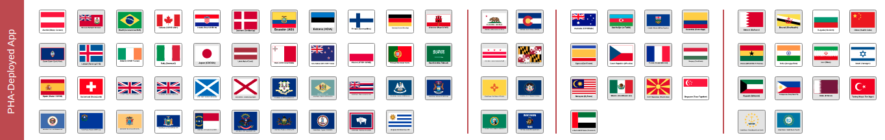

Linux Foundation Public Health (LFPH) hosts open source projects to aid in the fight against COVID-19 and future epidemics.
Contract tracing to help manage and reduce outbreaks
a method to track and verify vaccination

Vist them at www.lfph.io